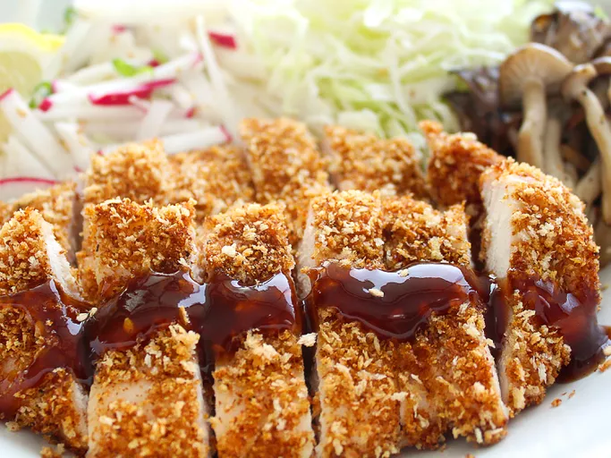

<<<<<<< HEAD
Return to Home Page
Chicken Katsu

Description:
What is katsu? Katsu is a Japanese dish of crispy fried cutlets coated with Panko bread crumbs.
=======
Return to Home Page
Chicken Katsu
Description
What is katsu? Katsu is a Japanese dish of crispy fried cutlets coated with Panko bread crumbs.
>>>>>>> 00fbf5e6b3c8f2cc54471adcea02e1ec5fbf6b13
It is traditionally made with pork, but this recipe calls for chicken. Pair this along with some
katsu sauce,
lettuce, and rice, and your dinner is served!
Ingredients (Yields 4 servings)
- 4 skinless, boneless chicken breast halves
- 2 tablespoons all-purpose flour
- 1 large egg, beaten
- 1 cup panko bread crumbs
- 1 cup oil for frying, or as needed
- salt and pepper to taste
Steps
- Gather all ingredients.
- Season chicken breasts on both sides with salt and pepper.
- Place flour, beaten egg, and panko crumbs into separate shallow dishes.
- Coat chicken breasts in flour, shaking off any excess; dip into egg, and then press into panko
crumbs until well coated on both sides.
- Heat oil in a large skillet over medium-high heat. Place chicken in the hot oil, and fry until
golden brown, 3 or 4 minutes per side. Transfer to a paper towel-lined plate to drain.
- Serve and enjoy.